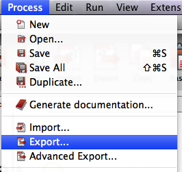

Exporting is important for a variety of reasons:
To export a diagram from Bonita Studio, go to the Menu bar, select Process, and click on Export.
When you export a Diagram, each Pool (Process) in the diagram is saved as an individual *.bar file (Bonita ARchive) in the directory or folder you choose. The Bonita Archive file is necessary to run your process in the BOS generated application or in your own application.
You also have the choice for Advanced Export that allows for specific deployment options of your corresponding applications.
